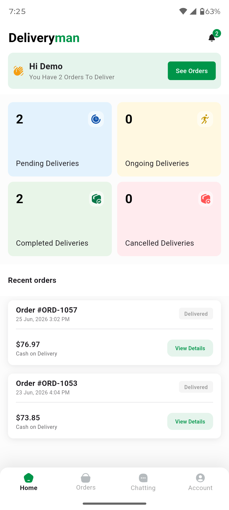
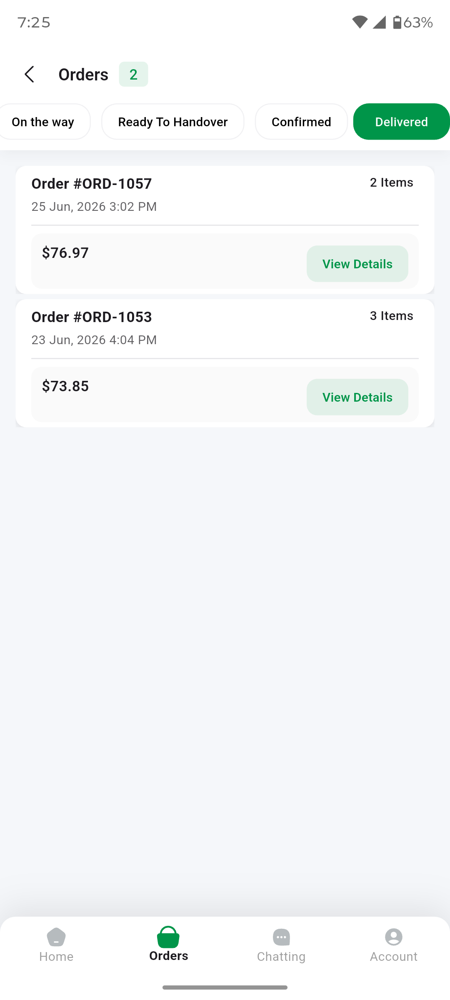
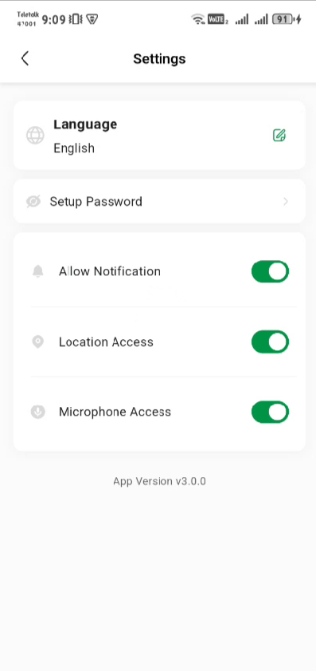

Introduction
The DayOneMart Deliveryman App is a dedicated Flutter mobile application for delivery personnel. It enables deliverymen to receive and manage assigned orders, navigate to delivery locations via Google Maps, update order statuses in real-time, communicate with admin via live chat, and manage their account — all from a single app on Android and iOS.
The app connects to the OneMart Admin & Web backend exclusively via the
REST API at /api/v1/delivery-man/*.
Push notifications are delivered through Firebase Cloud Messaging.
Technology Stack
| Layer | Package / Technology | Version |
|---|---|---|
| Framework | Flutter | SDK (stable) |
| Language | Dart | ^3.9.0 |
| State Management | flutter_bloc + BLoC | ^9.1 / ^9.2 |
| Navigation | go_router + go_transitions | ^17.2 / ^0.8 |
| Dependency Injection | get_it + injectable | ^9.2 / ^2.7 |
| Code Generation | freezed + json_serializable | ^3.2 / ^6.13 |
| Networking | http + connectivity_plus | ^1.6 / ^7.1 |
| Firebase | Core, Messaging, Crashlytics, Analytics | ^4.7 / ^16.2 |
| Maps & Location | google_maps_flutter + geolocator + location | ^2.17 / ^14.0 / ^8.0 |
| Permissions | permission_handler | ^12.0 |
| Images | cached_network_image + image_picker | ^3.4 / ^1.2 |
| Video | video_player + chewie | ^2.11 / ^1.13 |
| Notifications | flutter_local_notifications | ^21.0 |
| Localization | flutter_localizations + intl | SDK / ^0.20 |
| Chat | emoji_keyboard_flutter | ^1.7 |
| Error Tracking | firebase_crashlytics + catcher_2 | ^5.2 / ^2.1 |
| Storage | shared_preferences | ^2.5 |
| OTP | otp_autofill | ^4.1 |
| UI Utilities | shimmer_animation, skeletonizer, flutter_svg, animated_digit, sliver_tools, google_fonts | Latest |
Architecture Overview
The deliveryman app follows the same feature-first clean architecture pattern as the customer app:
- Feature modules — each feature is self-contained under
lib/features/<feature>/ - BLoC pattern — UI is decoupled from business logic via Blocs and Cubits
- GetIt / Injectable — dependency injection with code-generated service locator
- Freezed — immutable data classes and sealed union states
- GoRouter — declarative navigation with deep-link support and fade transitions
- Repository pattern — data sources abstracted behind repository interfaces
App Features
Key Screens (Annotated)
Capture these core screens on a device or emulator and annotate the numbered areas below with arrows or callouts before resubmission. Save each image with the exact file name shown.

1 2 3 4Key areas of this screen
- Greeting & See Orders — a summary of how many orders are waiting, with a shortcut to the order list; the bell shows new notifications.
- Delivery KPI cards — Pending, Ongoing, Completed, and Cancelled delivery counts.
- Recent orders — the latest assigned orders with status, amount, payment type, and View Details.
- Bottom navigation — Home, Orders, Chatting, and Account tabs.

1 2 3 4Key areas of this screen
- Status filter tabs — switch between On the Way, Ready to Handover, Confirmed, and Delivered.
- Order card header — order number, item count, and date/time.
- Amount & View Details — the order total and the button that opens the full order (customer, address, items, and status actions).
- Bottom navigation — Home, Orders, Chatting, and Account tabs.
Prerequisites
Development Machine Requirements
| Tool | Minimum Version | Notes |
|---|---|---|
| Flutter SDK | 3.x (stable channel) | Run flutter --version to check |
| Dart SDK | ^3.9.0 | Bundled with Flutter |
| Android Studio | Hedgehog (2023.1+) | Required for Android builds |
| Xcode | 15+ | macOS only — required for iOS builds |
| CocoaPods | Latest | macOS only — sudo gem install cocoapods |
| Java JDK | 17 | For Android Gradle builds |
External Services Required
- Firebase Project — push notifications (FCM), analytics, crashlytics
- Google Maps API Key — map display, directions, delivery navigation
- Backend URL — a running OneMart Admin & Web instance with the deliveryman API enabled
Flutter Environment Check
flutter doctor -v
Resolve all errors before proceeding. Warnings for unneeded platforms (e.g. Linux, Windows) can be ignored if you only target Android/iOS.
Project Structure
lib/ ├── main.dart ← App entry point + Firebase init ├── firebase_options.dart ← Generated by FlutterFire CLI │ ├── config/ │ ├── route/ │ │ └── route_config.dart ← GoRouter route definitions │ ├── theme/ ← App theme (colors, typography) │ └── util/ │ ├── app_constants.dart ← API base URL + all endpoints │ ├── assets.gen.dart ← Generated asset references │ ├── dimensions.dart ← Spacing / size constants │ └── styles.dart ← Reusable TextStyles │ ├── core/ │ ├── data/ │ │ └── api/ ← Base HTTP client, interceptors │ ├── model/ │ │ └── response/ ← Generic response wrappers │ ├── dependency_injection/ ← GetIt setup + injectable config │ ├── helper/ ← Notification helper, extensions, utils │ └── catcher_logs/ ← Catcher_2 error reporting config │ ├── features/ ← Feature-first modules │ ├── splash/ ← Splash screen + connectivity check │ ├── login/ ← Auth (login, OTP, forgot password, set password) │ ├── home/ ← Home screen + dashboard BLoC │ ├── dashboard/ ← Bottom nav shell + tab management │ ├── order/ ← Order list, details, delivery location, cancel, result │ ├── chat/ ← Chat list, conversations, message sending │ ├── account/ ← Profile, edit profile, change password, delete account │ ├── notification/ ← Notification list + management │ ├── settings/ ← Settings screen, language, theme, password setup │ ├── contact_us/ ← Contact support form │ ├── terms_and_condition/ ← Terms of service viewer │ ├── file_viewer/ ← Image/media file viewer │ ├── html/ ← Generic HTML content renderer │ └── common/ ← Shared widgets, theme BLoC │ ├── l10n/ │ ├── arb/ ← ARB localization source files │ │ ├── app_en.arb │ │ ├── app_es.arb │ │ ├── app_ar.arb │ │ ├── app_hi.arb │ │ └── app_bn.arb │ └── gen/ ← Generated localization classes │ └── app_localizations.dart │ assets/ ├── images/ ← PNG / JPG images │ ├── svg/ ← SVG icons │ │ └── flags/ ← Country flag SVGs │ └── gif/ ← Animated GIFs
Feature Module Structure
Each feature follows the same internal layout:
features/order/
├── data/
│ ├── models/ ← Freezed + JSON serializable DTOs
│ └── repositories/ ← Repository implementation (API calls)
├── domain/
│ └── services/ ← Domain service / repository interface
└── presentation/
├── bloc/ ← BLoC / Cubit + States + Events
│ ├── order/ ← Order list & detail BLoC
│ └── order_delivery_location/ ← Map tracking BLoC
├── screens/ ← Full-screen widgets
├── widgets/ ← Reusable widgets for this feature
└── utils/ ← Feature-specific utilities
Navigation Structure
The app uses a ShellRoute for the main dashboard with a bottom navigation bar housing four tabs:
| Tab | Route | Screen |
|---|---|---|
| Home | /home | HomeScreen — dashboard with stats |
| Orders | /order | OrdersScreen — active & completed orders |
| Chat | /chat | ChatScreen — chat with admin |
| Account | /account | AccountScreen — profile & settings |
Installation Guide (Step-by-Step)
Follow these steps in order to go from the downloaded ZIP to the app running on a device. Steps 6–7 point to their own detailed sections further down this page.
Before You Start — Checklist
- Flutter SDK installed and
flutter doctorpasses - Android Studio / Xcode configured with emulator/simulator
- Firebase project created (you will register the apps in Step 6; default package:
com.dayonesoft.onemartdeliveryman) - Google Maps API key obtained and enabled for Maps SDK + Directions API
- Backend (Admin & Web) is deployed and accessible — install it first
-
Extract the project Unzip the package and open the
Delivery Man Appfolder in your editor (VS Code / Android Studio). All commands below are run from this folder. -
Verify your Flutter environment
flutter doctor -v
Fix any reported errors (missing Android SDK, unaccepted licenses, no Xcode) before continuing. -
Install dependencies
flutter pub get
-
Generate code The project relies on code generation — it will not compile without this step:
dart run build_runner build --delete-conflicting-outputs flutter gen-l10n
-
Point the app at your backend Open
lib/config/util/app_constants.dartand setbaseUrlto your deployed Admin & Web instance (alwayshttps://in production). Also set your currency symbol — see Configuration. -
Connect Firebase Register the Android and iOS apps in your Firebase project, then place
google-services.jsoninandroid/app/andGoogleService-Info.plistinios/Runner/(or runflutterfire configure). Full walkthrough: Firebase Setup. -
Add your Google Maps API key Copy
secrets.xml.exampletoandroid/app/src/main/res/values/secrets.xmland fill in the key; add the iOS key toInfo.plist. Full walkthrough: Google Maps Setup. -
Run the app
flutter devices # list connected devices flutter run -d <device-id> # debug build on a device
Log in with a deliveryman account created in the Admin Panel (Users → Deliverymen → Create New), assign that deliveryman a test order, and confirm it appears on the app dashboard. -
Rebrand and release Rename the app, set your bundle ID, icon, splash, and colors using the Branding & Customization Guide, then produce store builds following Build & Release.
Configuration
API Base URL
Open lib/config/util/app_constants.dart and update the baseUrl
to point to your deployed OneMart Admin & Web instance:
// lib/config/util/app_constants.dart
class AppConstants {
static const String baseUrl = 'https://yourdomain.com';
// ...
}
baseUrl points to the demo server.
You MUST change it to your own backend URL before building for production.
Failure to do so will cause the app to send requests to the wrong server.
App Name & Bundle ID
| Platform | File | Key |
|---|---|---|
| Android | android/app/build.gradle |
applicationId (default: com.dayonesoft.onemartdeliveryman) |
| Android | android/app/src/main/AndroidManifest.xml |
android:label |
| iOS | ios/Runner/Info.plist |
CFBundleName, CFBundleIdentifier |
Currency Symbol
The default currency symbol is configured in app_constants.dart:
static String currencySymbol = "৳"; // Change to your currency static String currencySymbolPosition = 'left'; // 'left' or 'right'

Annotate on the Settings screen
- Language selector — switch the app's display language.
- Set up password — for accounts created via OTP login.
- Permission toggles — notification, location, and microphone access.
- Theme toggle — dark / light mode preference.
lib/config/util/app_constants.dart (see above).
Firebase Setup
-
Create or select your Firebase project Go to the Firebase Console. You can reuse the same Firebase project used for the Admin & Web backend and Customer App.
-
Register Android app Use the package name
com.dayonesoft.onemartdeliveryman. Downloadgoogle-services.jsonand place it at:android/app/google-services.json
-
Register iOS app Use the bundle ID
com.dayonesoft.onemartdeliveryman. DownloadGoogleService-Info.plistand add it to Xcode at:ios/Runner/GoogleService-Info.plist
-
Generate firebase_options.dart
# Install FlutterFire CLI (if not already installed) dart pub global activate flutterfire_cli # Login to Firebase firebase login # Generate firebase_options.dart flutterfire configure
This creates/updateslib/firebase_options.dartautomatically. -
Enable Firebase services In the Firebase Console, enable:
- Cloud Messaging (FCM) — required for push notifications
- Crashlytics — automatic crash reporting
- Analytics — usage analytics
FCM Topics
The app subscribes to the following FCM topics on launch:
deliveryman-group // All deliveryman-specific broadcast messages all-general // Platform-wide announcements
Google Maps Setup
Step 1 — Enable APIs in Google Cloud Console
- Maps SDK for Android
- Maps SDK for iOS
- Directions API (for delivery route navigation)
- Geocoding API
Step 2 — Configure Android (secrets.xml)
Copy the template and fill in your Google Maps API key:
cp secrets.xml.example android/app/src/main/res/values/secrets.xml
<!-- android/app/src/main/res/values/secrets.xml -->
<?xml version="1.0" encoding="utf-8"?>
<resources>
<string name="google_maps_api_key">YOUR_GOOGLE_MAPS_API_KEY</string>
</resources>
secrets.xml is gitignored and must never be committed.
Keep your API keys safe and out of version control.
Step 3 — Configure iOS
Add the Google Maps API key to ios/Runner/Info.plist:
<key>GoogleMapsApiKey</key> <string>YOUR_GOOGLE_MAPS_API_KEY</string>
Location Permissions
The app uses geolocator, location, and permission_handler
to request and manage location permissions. On first launch, the user is prompted to grant
location access, which is required for delivery navigation. The required permission entries
are already included in the AndroidManifest.xml and Info.plist.
Localization
The app supports 5 languages out of the box:
| Language | Code | ARB File |
|---|---|---|
| English | en | lib/l10n/arb/app_en.arb |
| Spanish | es | lib/l10n/arb/app_es.arb |
| Arabic | ar | lib/l10n/arb/app_ar.arb |
| Hindi | hi | lib/l10n/arb/app_hi.arb |
| Bangla | bn | lib/l10n/arb/app_bn.arb |
Localization Config
The localization configuration is defined in l10n.yaml:
arb-dir: lib/l10n/arb template-arb-file: app_en.arb output-localization-file: app_localizations.dart output-dir: lib/l10n/gen nullable-getter: false
Adding a New Language
-
Create a new ARB file, e.g.
lib/l10n/arb/app_fr.arb. Copy the structure fromapp_en.arband translate all strings. -
Add the language to the
languageslist inapp_constants.dart:LanguageModel(code: 'fr', name: 'French', nativeName: 'Français'),
-
Regenerate localization files:
flutter gen-l10n
ar) is an RTL language. Flutter handles layout mirroring automatically
when the ar locale is active. Untranslated strings are tracked in
untranslated.txt at the project root.
Mobile App Build Requirements
A store-ready build of the deliveryman app requires platform-specific code signing on both Android and iOS. This section covers Android keystore generation and iOS code signing from start to finish. Set these up once — the signing material is reused for every future release and update.
| Platform | You need | Where it is used |
|---|---|---|
| Android | An upload/release keystore (.jks) + key.properties | Signs the .aab / .apk for Google Play |
| iOS | Apple Developer Program membership, a Distribution certificate, an App ID, and a provisioning profile | Signs the .ipa for the App Store / TestFlight |
Android — Keystore Generation
Google Play requires every release build to be digitally signed with a keystore you own.
Generate one with the JDK's keytool utility:
keytool -genkey -v \ -keystore upload-keystore.jks \ -keyalg RSA -keysize 2048 -validity 10000 \ -alias upload
You will be prompted for a keystore password, a key password, and your organisation details.
This produces an upload-keystore.jks file. Move it into the Android app module
(for example android/app/upload-keystore.jks), then create
android/key.properties so Gradle can locate and use it:
# android/key.properties storePassword=<your-store-password> keyPassword=<your-key-password> keyAlias=upload storeFile=upload-keystore.jks
The Android app module is already configured to read key.properties and apply the
release signing config automatically, so no Gradle edits are required. Once the file is in
place, flutter build appbundle --release produces a signed, upload-ready bundle.
.jks keystore and its passwords somewhere safe and backed up, and
keep key.properties out of version control. Losing the keystore means you can
never publish an update to the same Google Play listing again.
iOS — Code Signing
iOS builds must be signed with credentials issued by Apple. A paid Apple Developer Program membership is required before you can create a distributable build.
-
Register an App ID (Bundle Identifier) In the Apple Developer portal → Certificates, Identifiers & Profiles → Identifiers, register a unique bundle ID (e.g.
com.yourcompany.onemartdeliveryman) and enable the Push Notifications capability. -
Create a Distribution certificate Under Certificates, create an Apple Distribution certificate and install it into your Mac's login Keychain. This identity signs release builds.
-
Create a provisioning profile Create an App Store distribution provisioning profile that links your App ID to the distribution certificate, then download and double-click it to install.
-
Configure signing in Xcode Open
ios/Runner.xcworkspace→ select the Runner target → Signing & Capabilities. Set your Team and the Bundle Identifier to match the App ID above. Automatically manage signing is recommended for most users. -
Create the app record in App Store Connect In App Store Connect, create a new app using the same bundle ID so you can upload builds to TestFlight and the App Store.
Build & Release
Android — Signing Setup
-
Create a release keystore:
keytool -genkey -v -keystore android/app/upload-keystore.jks \ -keyalg RSA -keysize 2048 -validity 10000 -alias upload
-
Create
android/key.properties:storePassword=<your-store-password> keyPassword=<your-key-password> keyAlias=upload storeFile=upload-keystore.jks
.jks) and key.properties file safe.
You need them for every future app update on Google Play. Losing the keystore means
you cannot publish updates to the same listing.
Android — Debug APK
flutter build apk --debug # Output: build/app/outputs/flutter-apk/app-debug.apk
Android — Release APK
flutter build apk --release --obfuscate --split-debug-info=build/app/outputs/symbols # Output: build/app/outputs/flutter-apk/app-release.apk
Android — App Bundle (Google Play)
flutter build appbundle --release --obfuscate --split-debug-info=build/app/outputs/symbols # Output: build/app/outputs/bundle/release/app-release.aab
--obfuscate shrinks and obfuscates Dart code for production.
--split-debug-info saves debug symbols needed for deobfuscating
crash reports in Firebase Crashlytics and Google Play Console.
Always keep the symbols directory alongside your release.
iOS — Release (App Store)
flutter build ipa --release --obfuscate --split-debug-info=build/ios/symbols
Then open build/ios/ipa in Xcode Organizer or use Transporter to upload
to App Store Connect.
API Integration
All API endpoints are declared in lib/config/util/app_constants.dart.
The HTTP client in lib/core/data/api/ prepends the baseUrl
and handles JWT token attachment, refresh, and error handling automatically.
Authentication Flow
POST /api/v1/delivery-man/auth/login ← Email/phone + password POST /api/v1/delivery-man/auth/send-login-otp ← Request login OTP POST /api/v1/delivery-man/auth/verify-login-otp ← Verify OTP → returns JWT POST /api/v1/delivery-man/auth/forgot-password ← Initiate password reset POST /api/v1/delivery-man/auth/verify-otp ← Verify reset OTP POST /api/v1/delivery-man/auth/reset-password ← Set new password POST /api/v1/delivery-man/auth/refresh ← Refresh JWT token POST /api/v1/delivery-man/auth/logout ← Invalidate session
Core Endpoints
| Feature | Method | Endpoint |
|---|---|---|
| App Config | GET | /api/v1/delivery-man/config |
| Dashboard | GET | /api/v1/delivery-man/dashboard |
| Orders | GET/PUT | /api/v1/delivery-man/orders |
| Map Direction | GET | /api/v1/delivery-man/config/map-direction |
| Profile | GET/PUT | /api/v1/delivery-man/profile |
| FCM Token | PUT | /api/v1/delivery-man/profile/fcm-token |
| Change Password | PUT | /api/v1/delivery-man/profile/change-password |
| Delete Account | DELETE | /api/v1/delivery-man/profile/delete-account |
| Settings | GET/PUT | /api/v1/delivery-man/profile/settings |
| Chat | GET/POST | /api/v1/delivery-man/chats |
| Notifications | GET/PUT/DELETE | /api/v1/delivery-man/notifications |
| Terms | GET | /api/v1/delivery-man/config/terms |
| Support / Contact | GET | /api/v1/delivery-man/config/support |
Request Headers
Authorization: Bearer {jwt_token}
Accept: application/json
Content-Type: application/json
X-localization: en ← Current language code
Troubleshooting
"google-services.json not found"
Ensure you have downloaded the file from Firebase Console and placed it at:
android/app/google-services.json
"Cannot resolve symbol '@string/google_maps_api_key'"
Create secrets.xml from the template:
cp secrets.xml.example android/app/src/main/res/values/secrets.xml # Then edit secrets.xml and add your real API key
Firebase Initialization Failed
dart pub global activate flutterfire_cli flutterfire configure
Build Runner Conflicts
dart run build_runner clean dart run build_runner build --delete-conflicting-outputs
Gradle Build Failures (Android)
- Run
flutter clean && flutter pub getand try again - Ensure
JAVA_HOMEpoints to JDK 17 - Check that
google-services.jsonis present - Invalidate Android Studio caches: File → Invalidate Caches
CocoaPods Issues (iOS)
cd ios pod deintegrate pod install --repo-update cd .. flutter build ios
Google Maps Not Showing
- Verify the API key in
secrets.xml(Android) andInfo.plist(iOS) - Ensure Maps SDK + Directions API are enabled in Google Cloud Console
- Check that billing is enabled on the Google Cloud project
- On Android, check
logcatfor "API key not valid" errors
Push Notifications Not Received
- Verify Firebase config files are up to date
- Ensure FCM Server Key is configured in Admin Panel under Settings → Firebase Setup
- On iOS: push notifications require a physical device and a valid APNs key in Firebase
- Test FCM delivery directly from Firebase Console → Cloud Messaging
Location Permission Denied
- On Android: check
AndroidManifest.xmlhasACCESS_FINE_LOCATIONandACCESS_COARSE_LOCATION - On iOS: check
Info.plisthasNSLocationWhenInUseUsageDescriptionandNSLocationAlwaysUsageDescription - If the user denied permission, guide them to Settings → App → Permissions
General Reset
flutter clean flutter pub get dart run build_runner build --delete-conflicting-outputs flutter gen-l10n flutter run
FAQ & Environment-Specific Issues
Common environment-specific hurdles when setting up and building the Flutter app.
API requests time out or fail to connect
- Confirm
baseUrlinapp_constants.dartis correct and starts withhttps://. - Ensure the backend is reachable from the device's network and that any firewall or cloud security group permits inbound traffic on the API port.
- Android emulator reaching a server on your own machine must use
10.0.2.2instead oflocalhost; the iOS simulator can uselocalhost. - Android 9+ and iOS block plaintext HTTP by default — always serve the API over HTTPS.
Gradle / Android build fails on a fresh machine
- Point
JAVA_HOMEat JDK 17 — newer or older JDKs commonly break the Android Gradle Plugin. - Run
flutter clean && flutter pub get, then rebuild. - Behind a proxy or firewall, configure it in
~/.gradle/gradle.propertiesso Gradle can download dependencies.
CocoaPods / iOS build fails
cd ios pod repo update pod install --repo-update cd .. flutter build ios
On Apple Silicon, if pods fail to install, retry under Rosetta:
arch -x86_64 pod install.
build_runner or code generation errors
dart run build_runner clean dart run build_runner build --delete-conflicting-outputs flutter gen-l10n
Location, Firebase, or Maps features do nothing at runtime
- Verify
google-services.json(Android) andGoogleService-Info.plist(iOS) are present and match your Firebase project. - Ensure Maps SDK + Directions API are enabled and that billing is active on the Google Cloud project — the map renders blank without it.
- Grant location permission when prompted; if previously denied, re-enable it in the OS Settings → App → Permissions screen.
Customization
App Theme & Colors
The global theme is defined in lib/config/theme/. The app supports both
light and dark themes with a ThemeBLoC in features/common/.
Update color values and typography in the theme files — changes propagate automatically
via Flutter's Theme.of(context).
App Icon
# Replace the icon images: # Android: android/app/src/main/res/mipmap-*/ic_launcher.png # iOS: ios/Runner/Assets.xcassets/AppIcon.appiconset/ # Or use the flutter_launcher_icons package for automated generation
Adding a New Feature
-
Create the feature folder under
lib/features/<feature_name>/withdata/,domain/, andpresentation/sub-directories. -
Define Freezed models in
data/models/and rundart run build_runner build. -
Create the BLoC/Cubit in
presentation/bloc/and register it with GetIt using the@injectableannotation. -
Add routes in
lib/config/route/route_config.dart. If the screen should be a dashboard tab, nest it inside theShellRoute.
Modifying the Dashboard Tabs
The bottom navigation is managed by DashboardScreen in
lib/features/dashboard/presentation/screens/dashboard_screen.dart.
The four tabs (Home, Orders, Chat, Account) are defined as ShellRoute
children in route_config.dart. To add or remove a tab, update both
the ShellRoute routes list and the BottomNavigationBar items.
Need help? Contact contact@6amtech.com or visit our website for support.